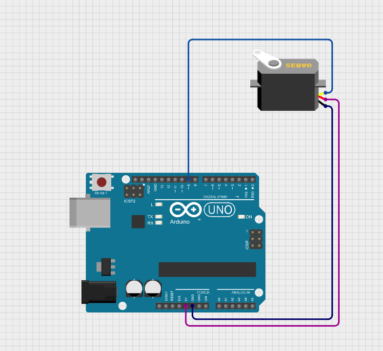
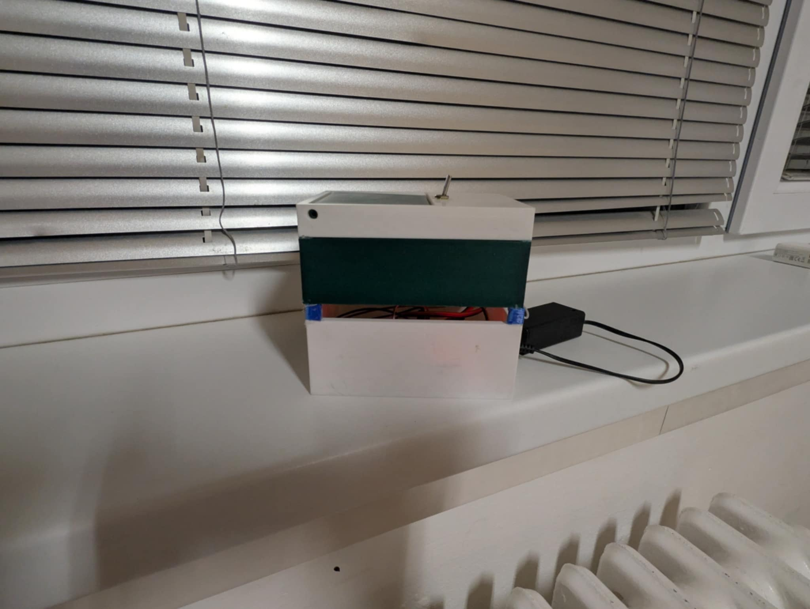
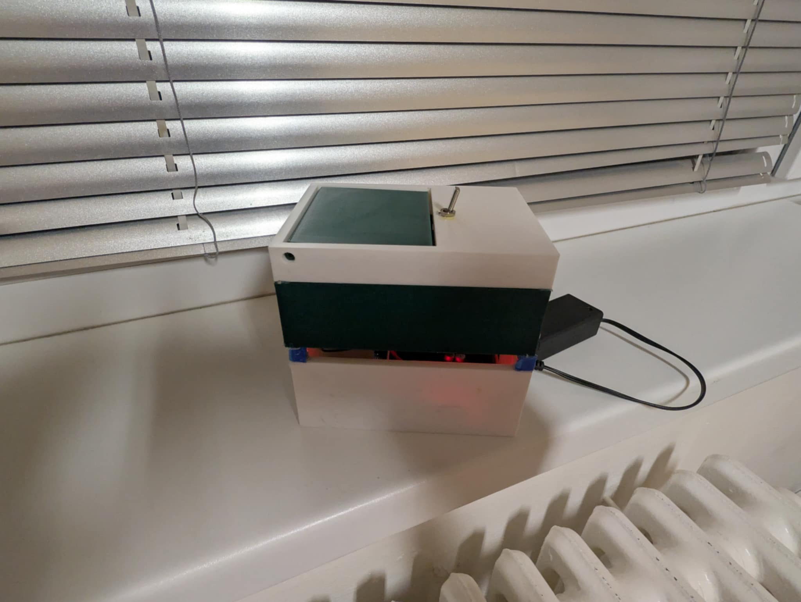

Popis projektu
Tento projekt kombinuje 3D tisk a mikroelektroniku. Naučil jsem se navrhovat 3D modely, tisknout je a následně integrovat elektronické komponenty. Výsledkem jsou funkční prototypy spojující mechanické a elektronické části.
Projekt zahrnoval návrh v CAD software, přípravu pro 3D tisk, tisk, a následnou práci s mikrokontroléry a základními elektronickými obvody.

3D tisk & elektronika
Průběh práce
-
I
Návrh 3D modeluVytvoření 3D modelu v CAD software s ohledem na požadavky elektronických komponent.
-
II
Příprava a tiskSlicing modelu, nastavení 3D tiskárny a samotný tisk prototypu.
-
III
Návrh elektronikyNávrh elektronického obvodu, výběr komponent a programování mikrokontroléru.
-
IV
Integrace a testováníZapojení elektroniky do vytištěného modelu a testování funkčnosti celku.
Výsledky
Propojení 3D tisku a mikroelektroniky přineslo funkční prototypy:
- ● Funkční zařízení kombinující vlastní vytištěný obal s elektronikou
- ● Zkušenosti s návrhem pro tisk (tolerance, místa pro komponenty)
- ● Programovatelné mikrokontroléry integrované do vlastních designů
- ● Celý workflow od návrhu, přes výrobu až po programování
Co jsem se naučil
- ✔ 3D modelování pro 3D tisk (CAD software)
- ✔ Práce s 3D tiskárnou - slicing, nastavení parametrů
- ✔ Základy elektroniky - obvody, komponenty
- ✔ Programování mikrokontrolérů (Arduino)
- ✔ Integrace mechanických a elektronických částí
Galerie

